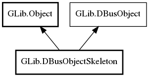

GLib.DBusObjectSkeleton Reference Manual
Packages
gio-2.0
GLib
DBusObjectSkeleton
g_object_path
DBusObjectSkeleton
add_interface
flush
remove_interface
remove_interface_by_name
set_object_path
authorize_method
DBusObjectSkeleton
Object Hierarchy:

Description:
public
class
DBusObjectSkeleton
:
Object
,
DBusObject
Namespace:
GLib
Package:
gio-2.0
Content:
Properties:
public
string
g_object_path
{
construct
set
;
owned
get
; }
Creation methods:
public
DBusObjectSkeleton
(
string
object_path)
Methods:
public
void
add_interface
(
DBusInterfaceSkeleton
interface_)
public
void
flush
()
public
void
remove_interface
(
DBusInterfaceSkeleton
interface_)
public
void
remove_interface_by_name
(
string
interface_name)
public
void
set_object_path
(
string
object_path)
Signals:
public
virtual
signal
bool
authorize_method
(
DBusInterfaceSkeleton
interface_,
DBusMethodInvocation
invocation)